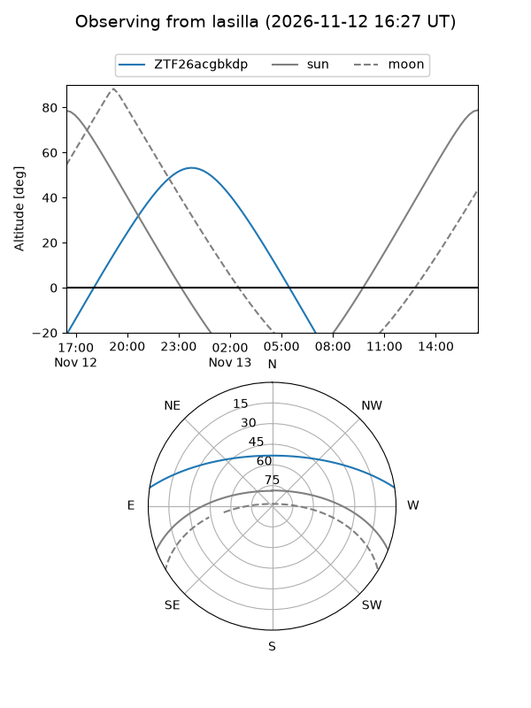
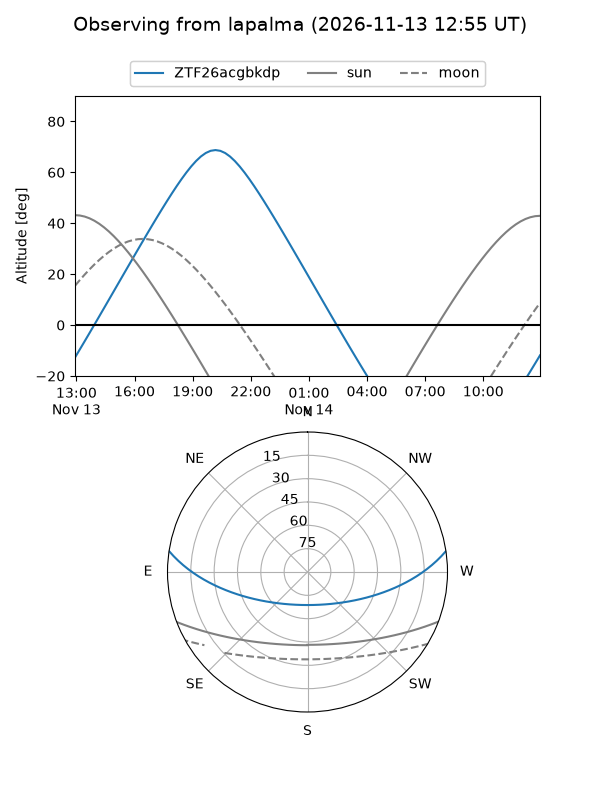
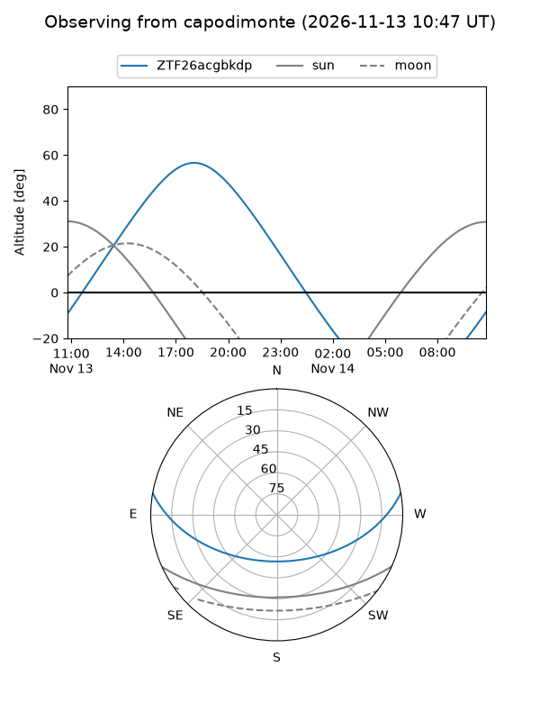
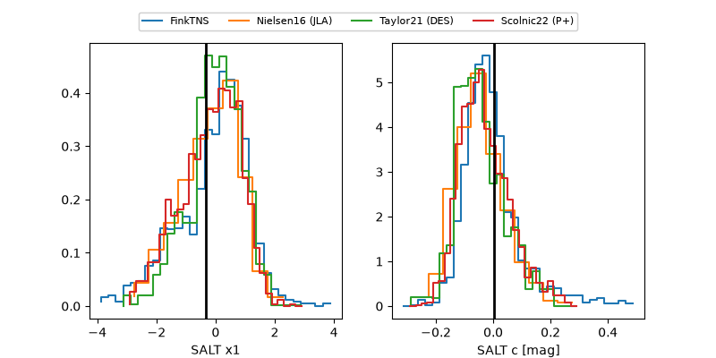

ZTF26acgbkdp
Target ZTF26acgbkdp at 2026-11-13 17:58
Aliases and brokers:
FINK-ZTF: ztf.fink-portal.org/ZTF26acgbkdp
Lasair-ZTF: lasair-ztf.lsst.ac.uk/objects/ZTF26acgbkdp
ALeRCE-ZTF: alerce.online/object/ZTF26acgbkdp
Direct TNS query: direct search
alt names
ZTF26acgbkdp (ztf,fink_ztf)
Coordinates:
equatorial (ra, dec) = 337.3750,+7.37814
equatorial (HMS+DMS) = 22:29:30.00,+07:22:41.32
galactic (l, b) = (72.9004,-41.31029)
Flags:
peak dt:
Photometry:
last atlaso=nan, ztfg=20.20, ztfr=20.19
1 atlaso, 2 ztfg, 2 ztfr detections
Lightcurve
Visibility



Additional plots
